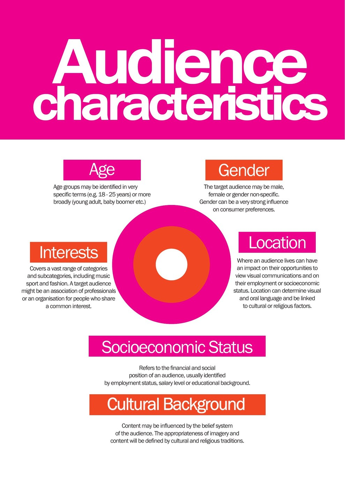

Paragraph 1 – Introduction to the Visual Communication Design
Write two sentences to introduce the visual communication (VC) you are analysing.
The designer would have begun by establishing the communication need with the client prior to starting the packaging design when establishing the brief.
- A client is the person who asks for the product to be made. Who is the client for the mug? (Communication need)
- Describe the visual appearance of the packaging design.
- Where are things placed on the packaging design?
The visual appearance of the packaging design is ____________ (appealing, colourful, etc.), because ____________.
On the packaging design, ____________ (items) are placed ____________.
Paragraph 2 – Context & Main Purpose
Write a paragraph to discuss the context and the main purpose/s for this packaging design.
- What is the purpose of the packaging design?
Use bold key VCD terminology such as the purposes and your choice of terms from this list: promote, identify, advertise, depict, inform, teach, guide.
It also aims to ____________ because ____________.
Purposes of visual communications

Paragraph 3 – Characteristics of the Target Audience
- Discuss who the target audience might be – who would buy this mug? Describe two characteristics.
Include the terms age, gender, interest, socio-economic status, location and cultural background to describe the audience.
They could be ____________ years old.
Audience characteristics

Paragraph 4 – Dominant Design Elements
- Discuss the dominant design elements used in the packaging design.
- Write a couple of sentences on each design element to analyse how they have been used effectively.
Paragraph 5 – Dominant Design Principles
Discuss the dominant design principles used in the packaging design. Write a couple of sentences on each design principle to analyse how they have been used effectively.
Paragraph 6 – Methods, Media and Materials
- Various methods, materials and media will have been used in the design of the Visual Communication.
- Select from the grids below and write them in a sentence for paragraph 6.
Method
| Digital image manipulation | Digital design page layout |
Media (select one)
| Manual media | Pencil, ink, fineliner, marker, pastel, crayon, charcoal, acrylic paint, watercolour paint, gouache paint, dye, toner, analogue film. |
| Digital media | Vector-based programs (e.g., Adobe Illustrator – lines and shapes). |
Material (select one)
| Manual materials | Paper, card, wood, glass, metal, clay, stone, plastic, textile. |
| Digital materials | Screen. |
The media used in this design includes ____________ (one selected media). This media is used in the example of ____________ (write about part of the design).
The design uses ____________ (explain the material).